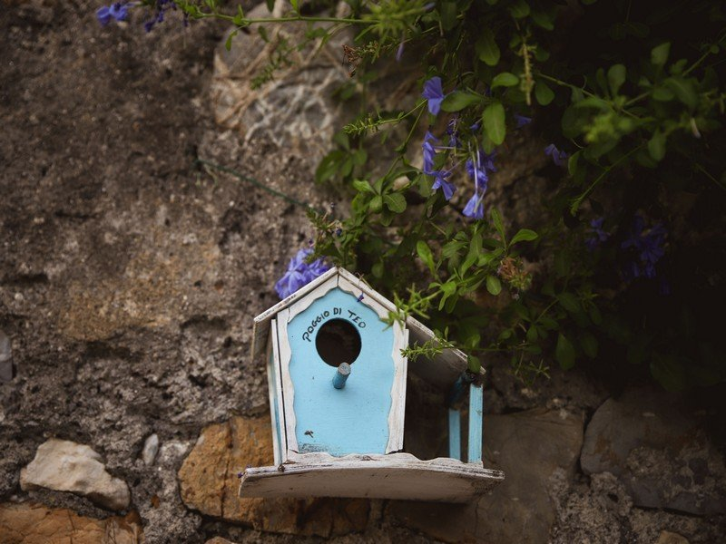
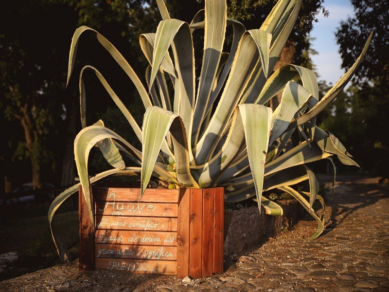
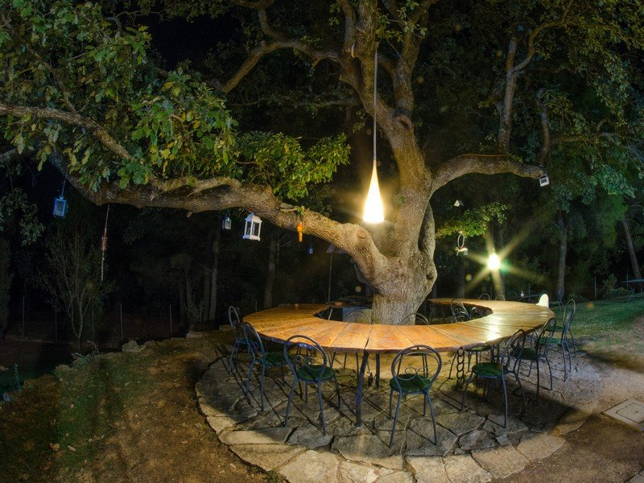
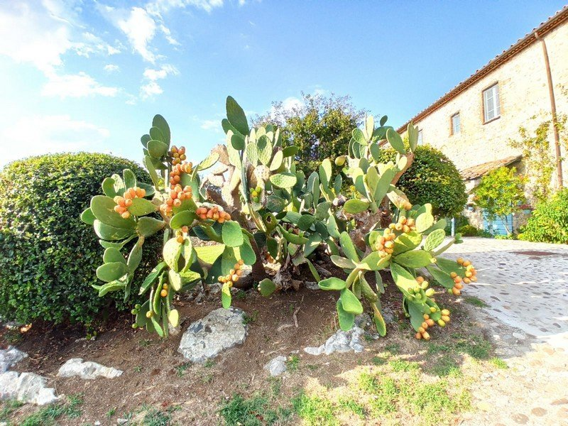
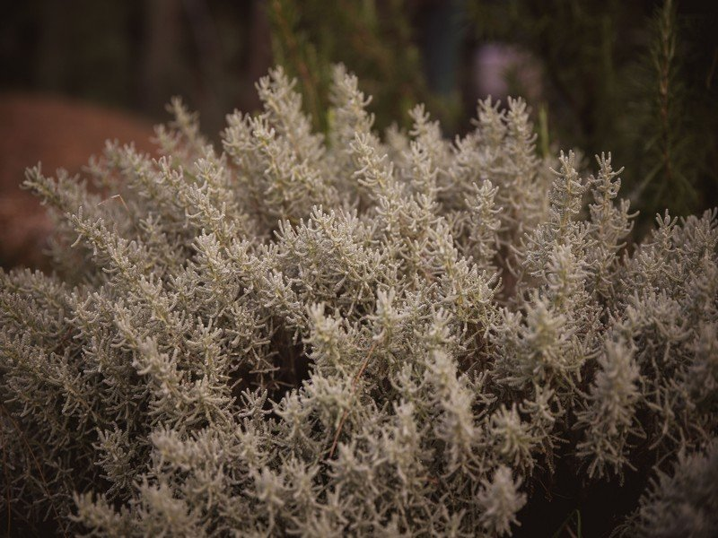
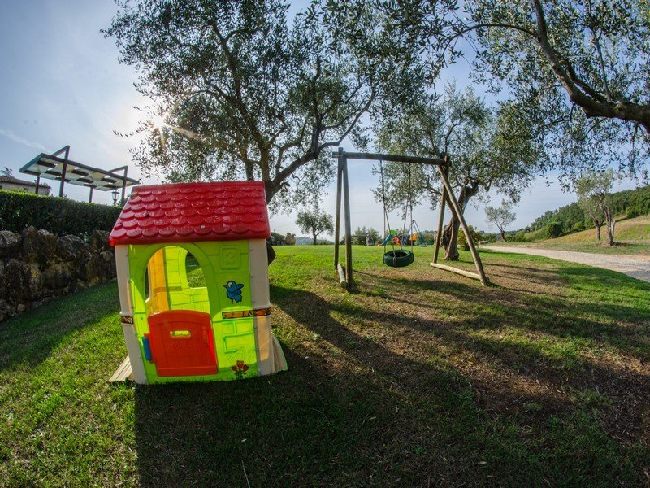
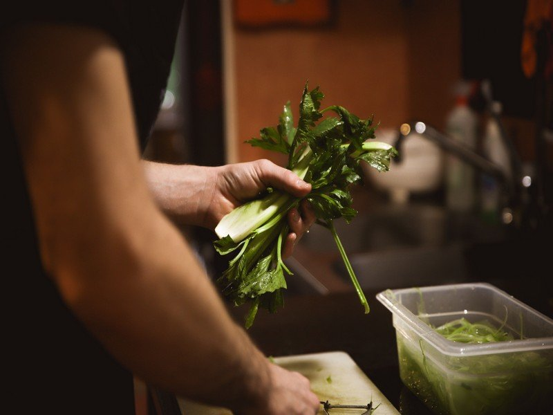

3 kmManciano
Borgo medievale con vista panoramica su tutta la Maremma, dal Cassero all'Argentario. Centro storico a ventaglio intorno alla fortezza medievale, custode di secoli di storia toscana.

Nel cuore della Maremma Toscana, tra borghi medievali, terme e mare
Il Poggio di Teo si trova in una posizione strategica e magica: dalla "Spia della Maremma" lo sguardo spazia a 360° dal mare alla montagna, dall'Argentario al Monte Amiata. Un punto di partenza ideale per esplorare uno dei territori più affascinanti d'Italia, ricco di borghi medievali intatti, terme naturali, necropoli etrusche e spiagge incontaminate — tutto a pochi chilometri di distanza.
Otto destinazioni straordinarie, tutte raggiungibili in meno di un'ora dal Poggio di Teo

3 kmBorgo medievale con vista panoramica su tutta la Maremma, dal Cassero all'Argentario. Centro storico a ventaglio intorno alla fortezza medievale, custode di secoli di storia toscana.

8 km4 piscine termali esterne, acque sulfuree a 37.5°C, percorsi vascolari e SPA completa. Un'esperienza di benessere senza pari in uno scenario toscano mozzafiato.
Cascate termali naturali in travertino con vasche naturali ad accesso libero e gratuito. Un paesaggio da sogno scolpito dall'acqua calda nel corso dei millenni.

8 kmUno dei borghi più belli d'Italia — centro storico a forma di cuore con la splendida Chiesa di San Giorgio e la Madonna della Gattaiola. Architettura romanica in stato di grazia perfetta.
La "Piccola Gerusalemme": borgo scavato nel tufo con sinagoga storica, Palazzo Orsini e le suggestive Vie Cave. Uno dei panorami più iconici dell'intera Toscana.

15 kmAtmosfera medievale senza tempo nell'Area del Tufo. La Necropoli etrusca con la Tomba Ildebranda e le Vie Cave scavate nella roccia viva custodiscono tremila anni di storia.

24 kmLa "Matera della Toscana" — abitazioni rupestri scavate nel tufo che si arrampicano su uno sperone di roccia. Un borgo fuori dal tempo, dove la pietra racconta storie antiche.

29–43 kmPorto Ercole, Porto Santo Stefano, le spiagge della Feniglia e della Giannella. A Capalbio il leggendario Giardino dei Tarocchi e le spiagge di Ansedonia, meta prediletta dei gourmet del mare.
Loc. La Stellata, 14 — 58014 Manciano (GR)